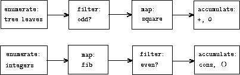

In working with compound data, we've stressed how data abstraction permits us to design programs without becoming enmeshed in the details of data representations, and how abstraction preserves for us the flexibility to experiment with alternative representations. In this section, we introduce another powerful design principle for working with data structuresthe use of conventional interfaces.
In Section we saw how program abstractions, implemented as higher-order functions, can capture common patterns in programs that deal with numerical data. Our ability to formulate analogous operations for working with compound data depends crucially on the style in which we manipulate our data structures. Consider, for example, the following function, analogous to the count_leaves function of Section , which takes a tree as argument and computes the sum of the squares of the leaves that are odd:
function sum_odd_squares(tree) {
if (is_empty_list(tree))
return 0;
else if (! is_pair(tree))
return (is_odd(tree)) ? square(tree) : 0;
else return sum_odd_squares(head(tree))
+
sum_odd_squares(tail(tree));
}
[Open in IDE]
On the surface, this function is very different from the following one, which constructs a list of all the even Fibonacci numbers ${\rm Fib}(k)$, where $k$ is less than or equal to a given integer $n$:
function even_fibs(n) {
function next(k) {
if (k > n)
return [];
else {
var f = fib(k);
if (is_even(f))
return pair(f,next(k+1));
else return next(k+1);
}
}
return next(0);
}
[Open in IDE]
Despite the fact that these two functions are structurally very different, a more abstract description of the two computations reveals a great deal of similarity. The first program
- enumerates the leaves of a tree;
- filters them, selecting the odd ones;
- squares each of the selected ones; and
- accumulates the results using +, starting with 0.
The second program
- enumerates the integers from 0 to $n$;
- computes the Fibonacci number for each integer;
- filters them, selecting the even ones; and
- accumulates the results using pair, starting with the empty list.
A signal-processing engineer would find it natural to conceptualize
these processes in terms of signals flowing through a cascade of
stages, each of which implements part of the program plan, as shown in
Figure . In sum_odd_squares, we
begin with an
enumerator, which generates a signal
consisting of the leaves of a given tree. This signal is passed
through a
filter, which eliminates all but the odd elements.
The resulting signal is in turn passed through a
map, which is a
transducer
that applies the square
function
to each
element. The output of the map is then fed to an
accumulator,
which combines the elements using +, starting from an initial 0.
The plan for even_fibs is analogous.

Unfortunately, the two function definitions above fail to exhibit this signal-flow structure. For instance, if we examine the sum_odd_squares function, we find that the enumeration is implemented partly by the is_empty_list and is_pair tests and partly by the tree-recursive structure of the function. Similarly, the accumulation is found partly in the tests and partly in the addition used in the recursion. In general, there are no distinct parts of either function that correspond to the elements in the signal-flow description. Our two functions decompose the computations in a different way, spreading the enumeration over the program and mingling it with the map, the filter, and the accumulation. If we could organize our programs to make the signal-flow structure manifest in the functions we write, this would increase the conceptual clarity of the resulting code.
Sequence Operations
The key to organizing programs so as to more clearly reflect the
signal-flow structure is to concentrate on the signals
that flow
from one stage in the process to the next. If we represent these
signals as lists, then we can use list operations to implement the
processing at each of the stages. For instance, we can implement the
mapping stages of the signal-flow diagrams using the map
function
from Section :
map(square,list(1,2,3,4,5))[Open in IDE]
Filtering a sequence to select only those elements that satisfy a given predicate is accomplished by
function filter(predicate,sequence) {
if (is_empty_list(sequence))
return [];
else if (predicate(head(sequence)))
return pair(head(sequence),
filter(predicate,tail(sequence)));
else
return filter(predicate,tail(sequence));
}
[Open in IDE]
For example,
filter(is_odd,list(1,2,3,4,5))[Open in IDE]
function accumulate(op,initial,sequence) {
if (is_empty_list(sequence))
return initial;
else
return op(head(sequence),
accumulate(op,initial,tail(sequence)));
}
[Open in IDE]
accumulate(plus,0,list(1,2,3,4,5))[Open in IDE]
accumulate(times,1,list(1,2,3,4,5))[Open in IDE]
accumulate(pair,[],list(1,2,3,4,5))[Open in IDE]
All that remains to implement signal-flow diagrams is to enumerate the sequence of elements to be processed. For even_fibs, we need to generate the sequence of integers in a given range, which we can do as follows:
function enumerate_interval(low,high) {
if (low > high)
return [];
else
return pair(low,
enumerate_interval(low+1,high));
}
[Open in IDE]
enumerate_interval(2,7)[Open in IDE]
To enumerate the leaves of a tree, we can use[1]
function enumerate_tree(tree) {
if (is_empty_list(tree))
return [];
else if (! is_pair(tree))
return list(tree);
else
return append(enumerate_tree(head(tree)),
enumerate_tree(tail(tree)));
}
[Open in IDE]
enumerate_tree(list(1,list(2,list(3,4)),5))[Open in IDE]
Now we can reformulate sum_odd_squares and even_fibs as in the signal-flow diagrams. For sum_odd_squares, we enumerate the sequence of leaves of the tree, filter this to keep only the odd numbers in the sequence, square each element, and sum the results:
function sum_odd_squares(tree) {
return accumulate(plus,
0,
map(square,
filter(is_odd,
enumerate_tree(tree))));
}
[Open in IDE]
For even_fibs, we enumerate the integers from 0 to $n$, generate the Fibonacci number for each of these integers, filter the resulting sequence to keep only the even elements, and accumulate the results into a list:
function even_fibs(n) {
return accumulate(pair,
[],
filter(is_even,
map(fib,
enumerate_interval(0,n))));
}
[Open in IDE]
The value of expressing programs as sequence operations is that this helps us make program designs that are modular, that is, designs that are constructed by combining relatively independent pieces. We can encourage modular design by providing a library of standard components together with a conventional interface for connecting the components in flexible ways.
Modular construction is a powerful strategy for controlling complexity in engineering design. In real signal-processing applications, for example, designers regularly build systems by cascading elements selected from standardized families of filters and transducers. Similarly, sequence operations provide a library of standard program elements that we can mix and match. For instance, we can reuse pieces from the sum_odd_squares and even-fibs functions in a program that constructs a list of the squares of the first $n+1$ Fibonacci numbers:
function list_fib_squares(n) {
return accumulate(pair,
[],
map(square,
map(fib,
enumerate_interval(0,n))));
}
[Open in IDE]
list_fib_squares(10)[Open in IDE]
We can rearrange the pieces and use them in computing the product of the odd integers in a sequence:
function product_of_squares_of_odd_elements(sequence) {
return accumulate(times,
1,
map(square,
filter(is_odd,sequence)));
}
[Open in IDE]
product_of_squares_of_odd_elements(list(1,2,3,4,5))[Open in IDE]
We can also formulate conventional data-processing applications in terms of sequence operations. Suppose we have a sequence of personnel records and we want to find the salary of the highest-paid programmer. Assume that we have a selector salary that returns the salary of a record, and a predicate is_programmer that tests if a record is for a programmer. Then we can write function salary_of_highest_paid_programmer(records) { return accumulate(Math.max, 0, map(salary, filter(is_programmer,records))); }
These examples give just a hint of the vast range of operations that can be expressed as sequence operations.[2]
Sequences, implemented here as lists, serve as a conventional interface that permits us to combine processing modules. Additionally, when we uniformly represent structures as sequences, we have localized the data-structure dependencies in our programs to a small number of sequence operations. By changing these, we can experiment with alternative representations of sequences, while leaving the overall design of our programs intact. We will exploit this capability in Section , when we generalize the sequence-processing paradigm to admit infinite sequences.
function map(p,sequence) {
return accumulate(function(x,y) { ?? },
[], sequence);
}
function append(seq1,seq2) {
return accumulate(pair, ??, ??);
}
function length(sequence) {
return accumulate(??, 0, sequence);
}
[Open in IDE]
function horner_eval(x,coefficient_sequence) {
return accumulate(function(this_coeff,
higher_terms) {
??
},
0,
coefficient_sequence);
}
[Open in IDE]
horner_eval(2,list(1,3,0,5,0,1))[Open in IDE]
function count_leaves(t) {
return accumulate(??, ??, map(??, ??));
}
[Open in IDE]
function accumulate_n(op,init,seqs) {
if (is_empty_list(head(seqs)))
return [];
else
return pair(accumulate(op,init,??),
accumulate_n(op,init,??));
}
[Open in IDE]
- dot_product($v$,$w$) returns the sum $\sum_{i}v_{i} w_{i}$.
- matrix_times_vector($m$,$v$) returns the vector $t$, where $t_{i} =\sum_{j}m_{ij}v_{j}$.
- matrix_times_matrix($m$,$n$) returns the matrix $p$, where $p_{ij}=\sum_{k} m_{ik}n_{kj}$.
- transpose($m$) returns the matrix $n$, where $n_{ij}=m_{ji}$.
function dot_product(v,w) {
return accumulate(plus,0,map(times,v,w));
}
[Open in IDE]
function matrix_times_vector(m,v) {
return map(??,m);
}
function transpose(mat) {
return accumulate_n(??,??,mat);
}
function matrix_times_matrix(n,m) {
var cols = transpose(n);
return map(??,m);
}
[Open in IDE]
function fold_left(op,initial,sequence) {
function iter(result,rest) {
if (is_empty_list(rest))
return result;
else
return iter(op(result,head(rest)),
tail(rest));
}
return iter(initial,sequence);
}
[Open in IDE]
fold_right(divide,1,list(1,2,3))[Open in IDE]
fold_left(divide,1,list(1,2,3))[Open in IDE]
fold_right(list,[],list(1,2,3))[Open in IDE]
fold_left(list,[],list(1,2,3))[Open in IDE]
function reverse(sequence) {
return fold_right(function(x,y) { ?? },[],sequence);
}
function reverse(sequence) {
return fold_left(function(x,y) { ?? },[],sequence);
[Open in IDE]
Nested Mappings
We can extend the sequence paradigm to include many computations that are commonly expressed using nested loops.[5]
Consider this problem: Given a positive integer $n$, find all ordered pairs of distinct positive integers $i$ and $j$, where $1\leq j< i\leq n$, such that $i +j$ is prime. For example, if $n$ is 6, then the pairs are the following: \[ \begin{array}{c|ccccccc} i & 2 & 3 & 4 & 4 & 5 & 6 & 6 \\ j & 1 & 2 & 1 & 3 & 2 & 1 & 5 \\ \hline i+j & 3 & 5 & 5 & 7 & 7 & 7 & 11 \end{array} \]
A natural way to organize this computation is to generate the sequence of all ordered pairs of positive integers less than or equal to $n$, filter to select those pairs whose sum is prime, and then, for each pair $(i, j)$ that passes through the filter, produce the triple $(i,j,i+j)$.
Here is a way to generate the sequence of pairs: For each integer $i\leq n$, enumerate the integers $j<i$, and for each such $i$ and $j$ generate the pair $(i,j)$. In terms of sequence operations, we map along the sequence enumerate_interval(1,n). For each $i$ in this sequence, we map along the sequence enumerate_interval(1,i-1). For each $j$ in this latter sequence, we generate the pair list(i,j). This gives us a sequence of pairs for each $i$. Combining all the sequences for all the $i$ (by accumulating with append) produces the required sequence of pairs:[6]
accumulate(append,
[],
map(function(i) {
return
map(function(j) {
return list(i,j);
},
enumerate_interval(1,i-1))
},
enumerate_interval(1,n)))
[Open in IDE]
The combination of mapping and accumulating with append is so common in this sort of program that we will isolate it as a separate function:
function flatmap(proc,seq) {
return accumulate(append,[],map(proc,seq));
}
[Open in IDE]
Now filter this sequence of pairs to find those whose sum is prime. The filter predicate is called for each element of the sequence; its argument is a pair and it must extract the integers from the pair. Thus, the predicate to apply to each element in the sequence is
function is_prime_sum(pair) {
return is_prime(head(pair)+head(tail(pair)));
}
[Open in IDE]
Finally, generate the sequence of results by mapping over the filtered pairs using the following function, which constructs a triple consisting of the two elements of the pair along with their sum:
function make_pair_sum(pair) {
return list(head(pair),head(tail(pair)),
head(pair)+head(tail(pair)));
}
[Open in IDE]
Combining all these steps yields the complete function:
function prime_sum_pairs(n) {
return map(make_pair_sum,
filter(is_prime_sum,
flatmap(function(i) {
return map(function(j) {
return list(i,j);
},
enumerate_interval(1,i-1));
},
enumerate_interval(1,n))));
}
[Open in IDE]
Nested mappings are also useful for sequences other than those that enumerate intervals. Suppose we wish to generate all the permutations of a set $S$; that is, all the ways of ordering the items in the set. For instance, the permutations of $\{1,2,3\}$ are $\{1,2,3\}$, $\{ 1,3,2\}$, $\{2,1,3\}$, $\{ 2,3,1\}$, $\{ 3,1,2\}$, and $\{ 3,2,1\}$. Here is a plan for generating the permutations of $S$: For each item $x$ in $S$, recursively generate the sequence of permutations of $S-x$,[7] and adjoin $x$ to the front of each one. This yields, for each $x$ in $S$, the sequence of permutations of $S$ that begin with $x$. Combining these sequences for all $x$ gives all the permutations of $S$:[8]
function permutations(s) {
if (is_empty_list(s))
return list([]);
else
return flatmap(function(x) {
return map(function(p) {
return pair(x,p);
},
permutations(remove(x,s)));
},
s);
}
[Open in IDE]
Notice how this strategy reduces the problem of generating permutations of $S$ to the problem of generating the permutations of sets with fewer elements than $S$. In the terminal case, we work our way down to the empty list, which represents a set of no elements. For this, we generate list([]), which is a sequence with one item, namely the set with no elements. The remove function used in permutations returns all the items in a given sequence except for a given item. This can be expressed as a simple filter:
function remove(item,sequence) {
return filter(function(x) {
return ! (x === item);
},
sequence);
}
[Open in IDE]
 The
The
eight-queens puzzleasks how to place eight queens on a chessboard so that no queen is in check from any other (i.e., no two queens are in the same row, column, or diagonal). One possible solution is shown in Figure . One way to solve the puzzle is to work across the board, placing a queen in each column. Once we have placed $k-1$ queens, we must place the $k$th queen in a position where it does not check any of the queens already on the board. We can formulate this approach recursively: Assume that we have already generated the sequence of all possible ways to place $k-1$ queens in the first $k-1$ columns of the board. For each of these ways, generate an extended set of positions by placing a queen in each row of the $k$th column. Now filter these, keeping only the positions for which the queen in the $k$th column is safe with respect to the other queens. This produces the sequence of all ways to place $k$ queens in the first $k$ columns. By continuing this process, we will produce not only one solution, but all solutions to the puzzle. We implement this solution as a function queens, which returns a sequence of all solutions to the problem of placing $n$ queens on an $n\times n$ chessboard. The function queens has an internal function queens_cols that returns the sequence of all ways to place queens in the first $k$ columns of the board.
function queeens(board_size) {
function queen_cols(k) {
if (k===0)
return list(empty_board);
else
return filter(function(positions) {
return is_safe(k,positions);
},
flatmap(function(rest_of_queens) {
return map(function(new_row) {
return adjoin_position(new_row,
k,
rest_of_queens);
},
enumerate_interval(1,board_size));
},
queens_cols(k-1)));
}
return queen_cols(board_size);
}
[Open in IDE]
Borodin and Munro (1975)
Borodin and Munro 1975pair$(i,j)$ is represented as list(i,j), not pair(i,j).